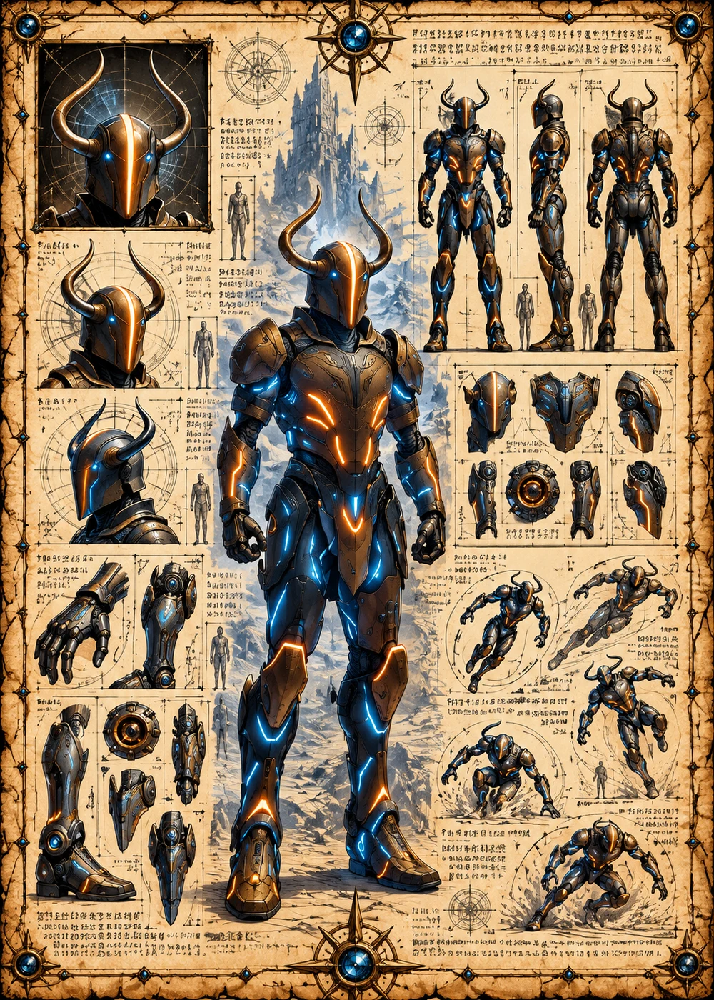

©
©
GENEZYS ARCHIVE · Earth 1 · Legionnaire
Omirae
Parallax Seer

Archive record
Omirae sees the world from two angles at once, and spots every enemy hiding in the twilight. The Dusk Glint hits hard, and harder still against anyone already drained. Around the fire of the Longhouse, Omirae is the one who tells the Marauders what is coming.
Combat signature
Dusk Glint
210 Cosmara
150 Animus
180 Vitalis
Reflects twilight into victim's eyes: Deals 130 damage to 1 enemy. If the target has 0 Cosmara, deals 50 more.
Genezys 09:03 ™&©2026LEGIONS
